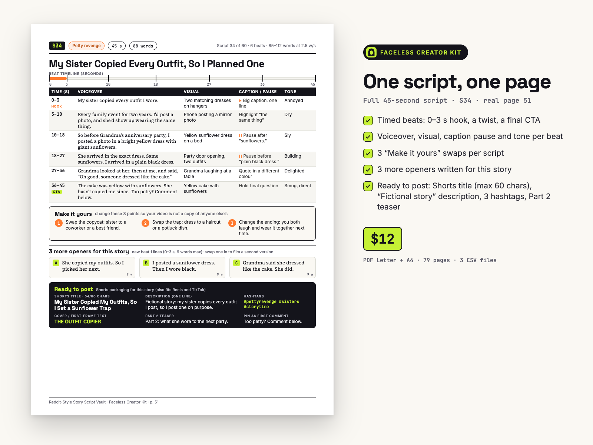
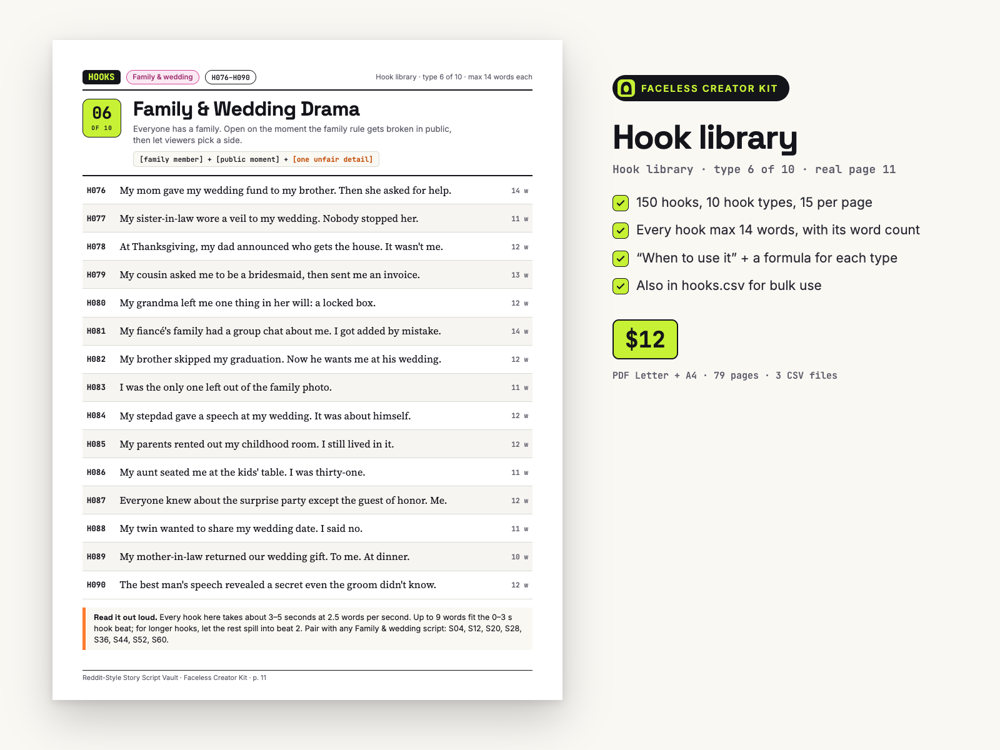
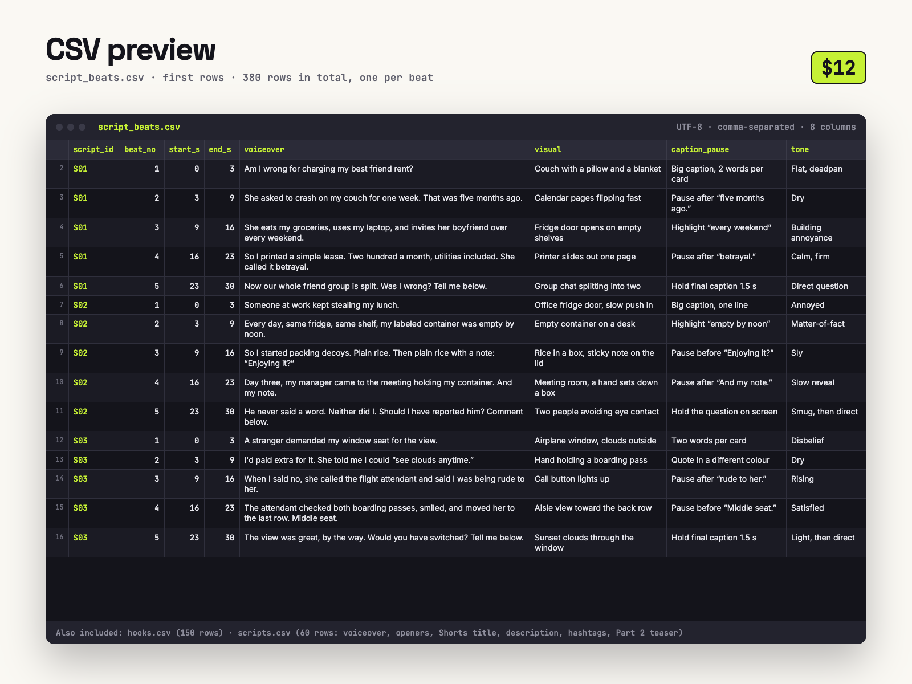

150 hooks + 60 original, timed Reddit-style story scripts you can actually narrate — written from scratch, not copied from real Reddit posts.
150 hooks + 60 original story scripts, timed beat by beat for 30, 45 and 60-second Shorts, Reels and TikToks, each with 3 extra openers and a ready-to-post title, description, hashtags and Part 2 teaser. PDF (Letter + A4) + 3 CSV files. From Faceless Creator Kit, the creator-tools imprint of Hustle Studio.

$12.00 USD, one-time, instant download (about $0.20 per script)
Buy now: $12 Read the free sample first🔒 Secure checkout. Payment is handled by Waffo Pancake, our merchant of record, and accepts common debit and credit cards. Waffo sends you the receipt; we never see your card details. Right after payment you go straight to the download page.
↩️ 14-day refund. If a file won't open or the pack doesn't match this description, email chenphien@gmail.com within 14 days of purchase and we refund you in full through Waffo Pancake (see Terms).
✅ Satisfaction guarantee. If you can't use a single one of the 60 scripts, email us within 14 days and you get your money back. No reason needed.
🆕 New shop, honest about it. This vault is new, so it has no reviews and no buyer videos yet, and we won't invent any. Instead you can read 2 complete scripts and 15 hooks for free, word for word, and every image below is a real page from the PDF or a real view of the CSV. The other 58 scripts follow the same rules and layout, and every one of the 60 titles is listed below. No script can promise views; what you get is the writing, timing and packaging work done.
Script S01 (30 s, 67 words) and script S41 (60 s, 121 words), each with every beat, the visual, caption and tone notes, the 3 “Make it yours” swaps, the 3 extra openers and the full “Ready to post” box. Plus all 15 hooks of the “Judgment ask” type and the README. Copied word for word from the paid files; no email or signup. Save it as a PDF with your browser's Print button.
Open the free sample


The 30-second (S01) and 60-second (S41) pages are in the free sample as text, word for word.
| File | What it is |
|---|---|
Reddit-Story-Script-Vault_Letter.pdf | 79 pages, US Letter |
Reddit-Story-Script-Vault_A4.pdf | 79 pages, A4 (same content) |
hooks.csv | 150 rows (hook_id, hook_type, subgenre, hook_text, word_count) |
scripts.csv | 60 rows, one per script (title, subgenre, length, word count, hook line, full voiceover, 3 swap points, CTA, 3 openers, Shorts title, description, hashtags, Part 2 teaser, cover text) |
script_beats.csv | 380 rows, one per beat (start and end seconds, voiceover, visual, caption / pause, tone) |
README.txt | File list, CSV import steps for Google Sheets and Excel, license summary |
Reddit-Story-Script-Vault.zip | All 6 files above in one ZIP |
Each PDF: cover, 2 clickable contents pages, How to use (1 page), Originality & platform notes (1 page), hook library (10 pages, 150 hooks), script index (2 pages), 60 script pages (each with 3 extra openers and a “Ready to post” box), “Turn a script into a video in 6 steps” (1 page), license (1 page).
Script breakdown: 60 scripts = 20 × 30 s (S01–S20) + 20 × 45 s (S21–S40) + 20 × 60 s (S41–S60), across 8 subgenres. 180 extra openers (3 per script). The download page has a separate link for each of the 6 files and for the ZIP.
Copied from the script index in the PDF, so you can judge the whole vault, not just the previews.
S01 Am I Wrong for Charging My Best Friend Rent? · S02 My Coworker Kept Stealing My Lunch, So I Packed Decoys · S03 A Stranger Demanded My Window Seat for the View · S04 My Mom Gave My Wedding Fund to My Brother · S05 My Boss Scheduled a Meeting About Fewer Meetings · S06 My Roommate Labeled Half the Fridge “Mine” · S07 My Grumpy Neighbor Left a Box on My Porch · S08 I Keep Getting Texts From My Own Number · S09 Was I Wrong to Leave My Own Birthday Dinner? · S10 My Neighbor Kept Parking in My Spot, So I Read the Rules · S11 She Wanted My Handmade Cake for Free · S12 I Got Left Out of the Family Photo · S13 I Found My Exact Job Posted Online · S14 My Upstairs Neighbor Tap Dances at 2 a.m. · S15 My Dad Learned Sign Language in Secret · S16 There's a Chair in My Attic. Not Mine. · S17 Am I Wrong for Not Lending My Car Again? · S18 My Roommate Never Did Dishes, So I Hid Every Plate · S19 A Parent Demanded the Swing I Was Fixing · S20 My Twin Wanted to Share My Wedding Date
S21 My Manager Read My Resignation Letter to the Team · S22 My Neighbor Built a Fence on My Lawn · S23 A Stranger Paid for My Groceries Ten Years Ago · S24 My New Apartment Came With a Key That Fits No Door · S25 Am I the Jerk for Not Switching Seats? · S26 The HOA Fined Me for My Mailbox Color · S27 She Reclined Fully, Then Handed Me Her Drink · S28 My Mother-in-Law Returned Our Wedding Gift at Dinner · S29 I Trained My Replacement Without Knowing It · S30 My Roommate Was Renting Out My Room While I Worked · S31 A Kid I Tutored for Free Just Wrote Me · S32 Every Photo From My Trip Has the Same Stranger · S33 Am I Wrong for Refusing My In-Laws a Key? · S34 My Sister Copied Every Outfit, So I Planned One · S35 My Neighbor Asked Me to Move My Fence for Her Photos · S36 My Aunt Seated Me at the Kids' Table at Thirty-One · S37 My Boss's Voice Note Wasn't Meant for Us · S38 My Neighbor Keeps Leaving Notes on My Car · S39 My Sister Ruined My Birthday Plans on Purpose · S40 My Elevator Stops at a Floor That Isn't There
S41 Was I Wrong to Be Honest in My Wedding Toast? · S42 He Took Credit for My Idea, So I Gave Him Another One · S43 A Stranger Said My Rescue Dog Was His · S44 My Grandma Left Me One Thing: a Locked Box · S45 Our Company Gave Us Pizza Instead of Raises · S46 My Roommate Started Charging Me to Use the Couch · S47 My Delivery Driver Kept Leaving Notes on My Packages · S48 My Babysitter Asked About the Other Kid · S49 Am I Wrong for Asking Guests to Pay? · S50 My Neighbor Blew Leaves Onto My Lawn. I Kept Every Leaf. · S51 A Customer Screamed at Me for Closing on Time · S52 My Stepdad's Wedding Speech Was About Himself · S53 My Client Used the Wrong Name for Two Years · S54 Someone Kept Taking My Packages, So I Set a Trap · S55 My Strictest Teacher Came to My Graduation · S56 A Diary in a Library Book Was Dated Tomorrow · S57 Was I Wrong to Cancel the Trip I Planned and Paid For? · S58 My Boss Said to Follow My Job Description. So I Did. · S59 My Cousin Invited Herself on My Honeymoon · S60 My Sister Uninvited Me From Her Wedding by Text
If you run a faceless story channel (a voiceover over gameplay or satisfying footage), you know the hard part isn't editing. It's having a good story ready every day, written to the right length, with a hook that lands in the first three seconds, and then a title, description and hashtags that fit it.
Many story channels narrate real Reddit posts. That means publishing someone else's writing, and it is exactly the kind of reused content platforms are getting stricter about. This vault gives you the same format your audience likes (first person, a clear conflict, a turn, a question at the end) as original fiction written from scratch for this pack.
Every script is built for production:
The 150 hooks are sorted by hook type, one type per page, with a “when to use it” note and a fill-in formula for each type. Use them as openers, as video titles, or as prompts for your own stories.
The CSV files hold the same text as the PDF, word for word, including the openers and the posting fields. Paste a script into your TTS tool, keep script_beats.csv open as an edit list, or import everything into Google Sheets or Excel (steps in the README).
All scripts are advertiser-friendly PG-13, use invented first names only, and mention no real people, brands or communities. The book includes a page on originality and platform rules: label the videos “Fictional story”, add your own edits, and use each platform's disclosure settings where they apply.
Honest note: no script can promise views, followers or income. This vault saves you the writing, timing and packaging work; the channel is still yours to build.
What you get, plainly: 60 short fictional stories, each written once at one length. 20 run 30 seconds (64–72 words), 20 run 45 seconds (88–107 words) and 20 run 60 seconds (118–139 words).
Why not just use a free AI story generator? You can, and you would still have to check every output. Here that work is done: every beat's word count was checked against the read-speed rule, so the story fits its slot; every story has a turn before the final question (a reveal, a comeback or a consequence), not a flat recap; every beat has its own visual, caption / pause and tone note; and every page comes with openers and a title, description and hashtags written for that story. You pay once and keep the files.
Can I use the scripts on a monetized channel?
Yes. Personal and commercial use in your own videos is allowed, including monetized channels. You can't resell or share the pack, the PDFs or the CSV files, or publish the scripts as a script product.
Are these real Reddit stories?
No. All 60 stories and 150 hooks are original fiction written from scratch. Every description in the “Ready to post” box already starts with “Fictional story:”, and we recommend not presenting them as true events.
Will every script fit its length?
Each script's total word count is checked at 2.5 words per second (150 wpm): 30 s scripts have 55–75 words, 45 s have 85–112, 60 s have 115–150. Each beat is also checked: at most 2.5 × its seconds + 2 words (so a 3-second hook has 9 words at most). If your voice is faster or slower, trim a pause or hold the last caption longer.
Do I get 30, 45 and 60-second versions of the same story?
No. Each of the 60 stories is written once, at one length. What you can do is film a second version of a story with one of its 3 extra openers and one “Make it yours” swap.
Won't other creators post the same scripts?
That's why every script has 3 “Make it yours” swap points (relationship, setting, ending) and 3 alternative openers. Change at least one swap, add your own voice and edits, and your video won't be the same as anyone else's.
Are the other 58 scripts as good as the samples?
They are written to the same timing rule and the same page layout: every one has timed beats, visual / caption / tone notes, 3 swaps, 3 openers and a Ready to post box. Read the 2 free scripts first; if the rest don't match, the 14-day refund covers you.
Will there be updates?
We don't promise new volumes. If we fix or improve these files, the new version goes on the same download page, free for buyers.
Where do I download the files?
Checkout runs through Waffo Pancake, our merchant of record. Right after payment you are sent to a download page on this site with a link for each file and the ZIP. Bookmark it to download again later. Questions: chenphien@gmail.com, we reply within 2 business days.
$12.00 USD, one-time
Buy now: $12Secure checkout by Waffo Pancake (merchant of record), common debit and credit cards accepted, instant download after payment. 14-day full refund if a file won't open, the pack doesn't match this page, or you can't use a single script.
Faceless Creator Kit / Hustle Studio is independent and not affiliated with Reddit or any video platform.